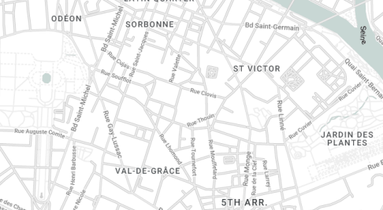

Musée Curie
Ressources
- Collections et ressources historiques
- Visite virtuelle
- Institut Curie
- Blog
- Documentation
- Nous soutenir
- Curiosités numériques
Réservation et horaires
Tous les jours de 9h à 17h
Gratuit pour les moins de 19 ans
Loisirs pour les enfants à partir de 4 ans
Retrouvez-nous
➣ 1 rue Pierre et Marie Curie - 75005 Paris
Contactez-nous
E-mail :
museecurie@gmail.com
Numéro de téléphone :
05 89 78 28 29